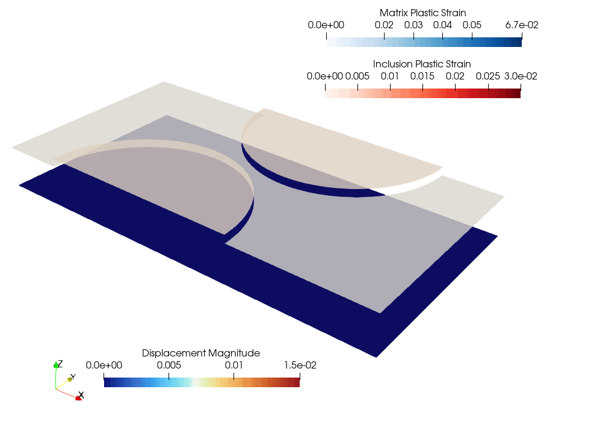

Multiple behaviors on subdomains and interface conditions#
In this demo, we show how to define a problem containing different subdomains, potentially separated by an interface. In each subdomain, a different MFront behavior is called.
We consider a geometry containing a matrix phase and inclusions. Both subdomains will be separated by an elastic interface behavior. In particular, the displacement field is continuous inside both phases, but discontinuous across the interface. To tackle this case, we will build a formulation involving the matrix and the inclusion submeshes with a standard Continuous Galerkin formulation in both of them. The two domains will then be tied by the formulation of an elastic behavior on the interface.
{kind=link}
See also
This demo builds upon the COMET cohesive zone models tutorials. While the latter focus on a damageable interface behavior and elastic behavior inside the phases, the present demo assumes an elastic behavior of the interface and different nonlinear plastic behaviors inside both phases. Both approaches can obviously be combined together.
Download sources
import numpy as np
from mpi4py import MPI
import gmsh
import ufl
from petsc4py import PETSc
from dolfinx import fem, io, mesh, cpp
from dolfinx_materials.quadrature_map import QuadratureMap
from dolfinx_materials.mfront import MFrontMaterial
from dolfinx_materials.solvers import NonlinearMaterialProblem
from utils import (
interface_int_entities,
transfer_meshtags_to_submesh,
)
Meshing and subdomains#
We first create the mesh and define the different tags for identifying physical domains and interfaces.
length = 1.0
width = 0.5
radius = 0.25
hsize = 0.01
domain, cells, facets = create_matrix_inclusion_mesh(length, width, radius, hsize)
MATRIX_TAG = 1 # tag of matrix phase
INCL_TAG = 2 # tag of inclusion phase
INT_TAG = 3 # tag of interface
LEFT_TAG = 1 # tag of left boundary
RIGHT_TAG = 2 # tag of right boundary
interface_facets = facets.find(INT_TAG)
tdim = domain.topology.dim
fdim = tdim - 1
Submesh creation#
We define three submeshes: two submeshes (of codim. 0) corresponding to the matrix and inclusion 2D domains and one submesh (of codim. 1) corresponding to the facet restriction on the interface
subdomain2, subdomain2_cell_map, subdomain2_vertex_map, _ = mesh.create_submesh(
domain, tdim, cells.find(INCL_TAG)
)
subdomain1, subdomain1_cell_map, subdomain1_vertex_map, _ = mesh.create_submesh(
domain, tdim, cells.find(MATRIX_TAG)
)
interface_mesh, interface_cell_map, _, _ = mesh.create_submesh(
domain, fdim, interface_facets
)
Now that we have defined submeshes, we need to transfer (facets) meshtags from those defined on the original domain to their subdomain counterpart. This function is available in ./utils.py.
subdomain1_facet_tags, subdomain1_facet_map = transfer_meshtags_to_submesh(
domain, facets, subdomain1, subdomain1_vertex_map, subdomain1_cell_map
)
subdomain2_facet_tags, subdomain2_facet_map = transfer_meshtags_to_submesh(
domain, facets, subdomain2, subdomain2_vertex_map, subdomain2_cell_map
)
### Entity map and integration measures#
Similarly to the previous CZM tour, entity maps must be defined to link integration of quantities defined on the subdomains.
Before setting up the entity_maps list, we need a specific treatment for integrating terms on the interface.
The interface_int_integration manually defines the specific integration quantities on the interface. Besides, interface terms seen from one specific subdomain only exist on one side. The helper function defines a consistent ordering such that cells for which marker[cell] != 0 correspond to the "+" restriction (inclusions here), and cells for which marker[cell] == 0 correspond to the "-" restriction (matrix here).
subdomain1.topology.create_connectivity(fdim, tdim)
subdomain2.topology.create_connectivity(fdim, tdim)
# Create a marker to identify cells on the "+" side of the interface
cell_imap = domain.topology.index_map(tdim)
num_cells = cell_imap.size_local + cell_imap.num_ghosts
marker = np.zeros(num_cells)
marker[cells.find(INCL_TAG)] = 1
interface_entities = interface_int_entities(domain, interface_facets, marker)
Finally, the list of entity maps relating both subdomains and the interface to the parent mesh is defined.
entity_maps = [subdomain1_cell_map, subdomain2_cell_map, interface_cell_map]
# -
We are now in position to define the various integration measures. The key point here is that the dInt interface measure is defined using prescribed integration entities which have been defined earlier. This is done by passing them to subdomain_data as follows.
dx = ufl.Measure("dx", domain=domain, subdomain_data=cells)
ds = ufl.Measure("ds", domain=domain, subdomain_data=facets)
dx_int = ufl.Measure("dx", domain=interface_mesh)
dInt = ufl.Measure(
"dS",
domain=domain,
subdomain_data=[(INT_TAG, interface_entities)],
subdomain_id=INT_TAG,
)
Nonlinear behavior formulation#
\(\newcommand{\bu}{\boldsymbol{u}}
\newcommand{\bv}{\boldsymbol{v}}
\newcommand{\jump}[1]{[\![#1]\!]}\)
We now define the relevant function spaces. As hinted before, the unknown \(\bu\) will consist of two displacements \((\bu^{(1)},\bu^{(2)})\) respectively belonging to a continuous Lagrange space defined on subdomains 1 and 2. We use a MixedFunctionSpace for this, meaning that we will end up with a block system.
def strain(u):
return ufl.as_vector(
[
u[0].dx(0),
u[1].dx(1),
0.0,
1 / np.sqrt(2) * (u[1].dx(0) + u[0].dx(1)),
0.0,
0.0,
]
)
V1 = fem.functionspace(subdomain1, ("Lagrange", 1, (tdim,)))
V2 = fem.functionspace(subdomain2, ("Lagrange", 1, (tdim,)))
W = ufl.MixedFunctionSpace(V1, V2)
u1 = fem.Function(V1, name="Displacement")
u2 = fem.Function(V2, name="Displacement")
v1, v2 = ufl.TestFunctions(W)
du1, du2 = ufl.TrialFunctions(W)
Material laws on subdomains#
Second, we define two different MFrontMaterial on the two subdomains. In this example, we use two plastic behaviors with different yield surfaces and hardening laws. In the matrix, a von Mises criterion is used with an exponential Voce hardening whereas in the stiffer inclusions, we use a Hosford criterion and linear isotropic hardening.
Important
It is perfectly possible to use behaviors with different internal state variables, and even with different gradients/fluxes etc. They are really independent from each other and will only be combined by summing their contribution to the resulting weak form. As a result, we could also combine a MFront implementation and a JAX implementation for instance.
material1 = MFrontMaterial(
"src/libBehaviour.so",
"IsotropicPlasticMisesFlowVoce",
material_properties={
"young_modulus": 70e3,
"poisson_ratio": 0.3,
"R0": 200.0,
"Rinf": 450,
"b": 100,
},
)
# material2 = MFrontMaterial(
# "src/libBehaviour.so",
# "IsotropicPlasticHosfordFlowLinear",
# material_properties={
# "young_modulus": 90e3,
# "poisson_ratio": 0.25,
# "hardening_slope": 10.0,
# "R0": 200.0,
# },
# )
from dolfinx_materials.jaxmat import JAXMaterial
import jax.numpy as jnp
import jaxmat.materials as jm
import equinox as eqx
elasticity = jm.LinearElasticIsotropic(E=90e3, nu=0.25)
yield_stress = jm.VoceHardening(sig0=200.0, b=10.0, sigu=300.0)
behavior = jm.vonMisesIsotropicHardening(
elasticity=elasticity, yield_stress=yield_stress
)
material2 = JAXMaterial(behavior)
As a result, we define two different QuadratureMap defined on both subdomains. Note that the registered gradients involve the two different displacements u1 and u2 respectively. Note that when assembling mixed forms it is more convenient that integration measures are defined on the similar parent domain (the full mesh) and to pass the entity maps when compiling the forms. We thus redefine the qmap measures metadata accordingly. Finally, we define the contributions of both subdomains to the total residual form.
deg_quad = 1
qmap1 = QuadratureMap(subdomain1, deg_quad, material1)
qmap1.register_gradient("Strain", strain(u1))
qmap1.dx = qmap1.dx(domain=domain, subdomain_data=cells)
sig1 = qmap1.fluxes["Stress"]
qmap2 = QuadratureMap(subdomain2, deg_quad, material2)
qmap2.register_gradient("strain", strain(u2))
qmap2.dx = qmap2.dx(domain=domain, subdomain_data=cells)
sig2 = qmap2.fluxes["stress"]
Res_matrix = ufl.dot(sig1, strain(v1)) * qmap1.dx(1)
Res_inclusions = ufl.dot(sig2, strain(v2)) * qmap2.dx(2)
Interface behavior#
As regards the elastic interface of stiffness \(K\), its contribution to the total residual is given by:
where we define the displacement \(\jump{\bu} = \bu^{(2)} - \bu^{(1)}\) with \((1)\) denoting subdomain 1 (the matrix) and \((2)\) denoting subdomain 2 (the inclusions). Note that we need to restrict quantities since we work with a facet measure on the interface \(\Gamma\). Although only one side exist for each subdomain, cells of a given subdomain from one side have been mapped to the other side, as discussed before. As a result, it does not really matter which side is used here. For consistency, we use the the "+" side for subdomain 1 and the "-" side for subdomain 2.
def jump(u1, u2):
# As cell("+") are mapped to cell("-") when defining the cell maps, it does not really matter which side ("+"/"-") is used
return u2("+") - u1("-")
K = fem.Constant(domain, 1e5)
Res_interface = K * ufl.dot(jump(u1, u2), jump(v1, v2)) * dInt
Total residual and jacobian#
Finally, the total residual is the sum of all three residuals. Since we work with a MixedFunctionSpace, we use ufl.extract_blocks to extract the blocks corresponding to both u1 and u2. We then compute the corresponding Jacobian with both qmap.derivative in the corresponding trial functions. Both the residual and tangent blocked forms are compiled by passing the entity_maps dictionary to fem.form.
Res = Res_matrix + Res_inclusions + Res_interface
Res_blocked_compiled = fem.form(ufl.extract_blocks(Res), entity_maps=entity_maps)
Jac = qmap1.derivative(Res, u1, du1) + qmap2.derivative(Res, u2, du2)
Jac_blocked_compiled = fem.form(ufl.extract_blocks(Jac), entity_maps=entity_maps)
Boundary conditions#
We apply an imposed displacement on the right boundary and fix the left boundary. We use a virtual test field with unit value on the boundary to compute the consistent reaction force, see .
Uimp = fem.Constant(domain, (1.0, 0.0))
left_dofs = fem.locate_dofs_topological(V1, fdim, subdomain1_facet_tags.find(1))
right_dofs = fem.locate_dofs_topological(V1, fdim, subdomain1_facet_tags.find(2))
bcs = [
fem.dirichletbc(np.zeros((tdim,)), left_dofs, V1),
fem.dirichletbc(Uimp, right_dofs, V1),
]
v_reac1 = fem.Function(V1)
fem.set_bc(v_reac1.x.array, bcs)
v_reac2 = fem.Function(V2)
fem.set_bc(v_reac2.x.array, bcs)
virtual_work_form = fem.form(
ufl.replace(Res, {v1: v_reac1, v2: v_reac2}),
entity_maps=entity_maps,
)
Resolution#
Next, we define the NonlinearMaterialProblem by passing the list of QuadratureMap objects and a list of functions corresponding to the blocked solution. We then define a classical Newton solver.
petsc_options = {
"snes_type": "newtonls",
"snes_linesearch_type": "none",
"snes_atol": 1e-6,
"snes_rtol": 1e-6,
"snes_monitor": None,
"ksp_type": "preonly",
"pc_type": "lu",
"pc_factor_mat_solver_type": "mumps",
}
problem = NonlinearMaterialProblem(
[qmap1, qmap2],
Res_blocked_compiled,
[u1, u2],
bcs=bcs,
J=Jac_blocked_compiled,
petsc_options_prefix="multimaterials",
petsc_options=petsc_options,
)
Time-stepping#
Upon time-stepping, post-processing steps are needed. Fields associated with both domains are stored in their own file, since they do not share the same mesh.
N = 30
Exx = np.linspace(0, 15e-3, N + 1)
p1 = qmap1.project_on("EquivalentPlasticStrain", ("DG", 0), entity_maps=entity_maps)
p1.name = "PlasticStrain1"
p2 = qmap2.project_on("p", ("DG", 0), entity_maps=entity_maps)
p2.name = "PlasticStrain2"
file1 = io.VTXWriter(domain.comm, f"multimaterials_domain1.bp", output=[u1, p1])
file1.write(0)
file2 = io.VTXWriter(domain.comm, f"multimaterials_domain2.bp", output=[u2, p2])
file2.write(0)
Force = np.zeros_like(Exx)
for i, exx in enumerate(Exx[1:]):
Uimp.value[0] = exx * length
problem.solve()
assert problem.solver.getConvergedReason()
qmap1.project_on(
"EquivalentPlasticStrain", ("DG", 0), fun=p1, entity_maps=entity_maps
)
p2 = qmap2.project_on("p", ("DG", 0), fun=p2, entity_maps=entity_maps)
file1.write(i + 1)
file2.write(i + 1)
Force[i + 1] = fem.assemble_scalar(virtual_work_form)
file1.close()
file2.close()
Results#
We finally plot the resulting load-displacement curve.
import matplotlib.pyplot as plt
plt.figure()
plt.plot(Exx, Force, "-oC3")
plt.xlabel("Imposed horizontal strain")
plt.ylabel("Reaction force")
plt.show()
from dolfinx.common import list_timings
list_timings(MPI.COMM_WORLD)
[MPI_MAX] Summary of timings (s) | reps avg tot
--------------------------------------------------------------------------------------------------------
Build dofmap data | 17 0.000182 0.003096
Compute connectivity 1-0 | 3 0.000045 0.000136
Compute connectivity 2-0 | 3 0.000021 0.000064
Compute dof reordering map | 17 0.000019 0.000321
Compute entities of dim = 1 | 3 0.002103 0.006309
Compute entity permutations | 3 0.000308 0.000925
Compute graph partition (ParMETIS) | 1 0.000004 0.000004
Compute local part of mesh dual graph (mixed) | 2 0.003088 0.006176
Compute local-to-local map | 1 0.000351 0.000351
Compute non-local part of mesh dual graph | 1 0.000013 0.000013
Compute-local-to-global links for global/local adjacency list | 1 0.000085 0.000085
Distribute fixed-degree adjacency list to destination ranks | 1 0.000447 0.000447
Distribute row-wise data (scalable) | 1 0.000091 0.000091
GPS: create_level_structure | 4 0.000139 0.000557
Gibbs-Poole-Stockmeyer ordering | 1 0.001133 0.001133
Init dofmap from element dofmap | 17 0.000115 0.001961
SNES: constitutive update | 136 0.122995 16.727270
SNES: solve | 30 0.676097 20.282908
SparsityPattern::finalize | 63 0.000245 0.015428
Topology: create | 1 0.004006 0.004006
Topology: determine shared index ownership | 1 0.000079 0.000079
Topology: determine vertex ownership groups (owned, undetermined, unowned) | 1 0.000173 0.000173
dx_mat: External state variable update | 272 0.000002 0.000482
dx_mat: Gradients evaluation | 272 0.000567 0.154216
dx_mat: Material integration | 272 0.058420 15.890352
dx_mat: Quadrature Expression evaluation | 274 0.000301 0.082479
dx_mat: Update values and tangent operators | 272 0.002468 0.671293
jaxmat: Constitutive update | 135 0.052274 7.057010
jaxmat: First pass (includes jit compilation) | 1 6.813175 6.813175
jaxmat: dolfinx to jaxmat conversion | 136 0.002370 0.322384
jaxmat: jaxmat to dolfinx conversion | 136 0.003191 0.433976